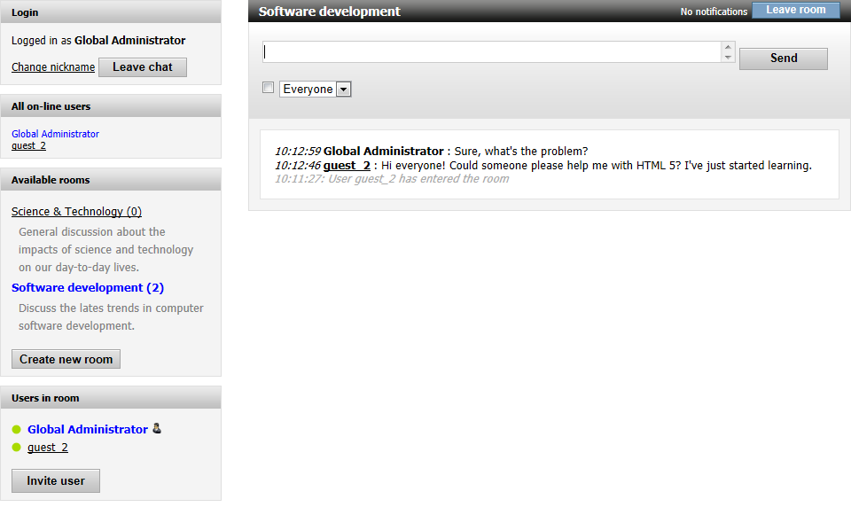
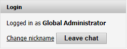
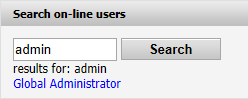
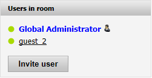
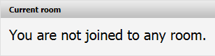
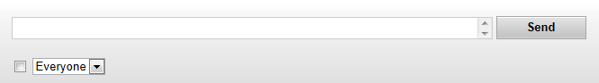
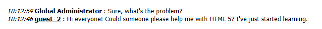
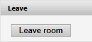
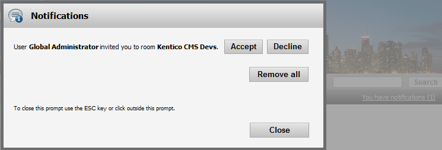
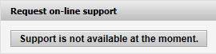

Chat web parts
This topic lists all web parts that accommodate the different chat functions on the live site.
Regular chat web parts
Chat web part
The Chat web part combines all the web parts described in the following text into one. It provides a ready-to-use solution to be placed on a page without additional configuration.

Other web parts in this topic can be placed either all together on a single page, or separately on multiple pages while the web parts ensure redirection between the pages.
Chat login
Enables users to log into chat. When logged in, displays the login status, a link to change nickname and the Leave button.

Chat rooms
Displays a list of available rooms and a button to create a new one if the current user is allowed to do so.
Chat on-line users
Provides a list of users currently on-line in the chat. Additionally, it allows to initiate one-on-one chat with an on-line user.
Chat search on-line users
Allows to find a particular user among the users currently on-line.

Chat room users
Displays the list of users who joined a particular chat room along with their on-line state.

Chat room name
Displays the name of the room the user is currently in.

Chat send message
Allows users to send a message to the current chat room.

Chat room messages
Displays the messages posted to the current chat room.

Chat leave room
Displays a button to leave the current room.

Chat notifications
Displays notifications about various events, such as receiving an invitation to a room.

Chat errors
Displays warnings and errors that may occur while chatting. If the web part is not present, all errors are displayed as JavaScript alerts.
Support chat web parts
Chat support request
Displays a button that users can use to request chat with a support person.

Initiated chat
Allows support personnel to start chatting with the visitor who is viewing the page with this web part.
Automatically initiated chat
Allows to define a message, with which it will automatically address the visitor who is viewing the page with this web part.